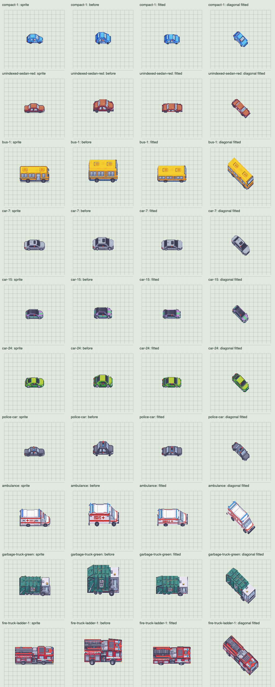

Native sprites, previous game proportions, fitted bodies, then fitted diagonal views. Ten representative models are shown at equal scale; the measurements cover all 45 vehicles. The red mark is the ground origin.
Side heights match within one native pixel. End views retain the differences between the source cameras and the fixed game projection. Ground contact is checked across eight headings and four wheel phases.
Try in the game · All 45 measurements
